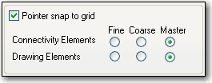

You set project preferences by using the . The settings in the Preferences dialog box
determine how Capture works on your system, and persist
from one Capture session to the next because they are
stored in the Capture initialization (.INI) file on your
system. If you pass projects to others, they won’t
inherit your preference settings. This means you can set
colors, grid display options, pan and zoom options, and so
on to your liking and be assured that your settings will
remain, even if you work on a project created on another
system.
Once you begin working on a project, you can customize its
particular characteristics by choosing Design Properties
from the Options menu when you are in the project manager,
or Schematic Page Properties when you are in the schematic
page editor.
In this section:
Setting colors for objects on the schematic page
Set up colors for objects such as off-page connectors, hierarchical blocks and ports, text, title blocks, and so on, and specify which objects will be printed or plotted. You can also change the background color and the color of the grid.
You control the color in which schematic page objects display by using the Colors/Print tab in the .
- Choose O ptions – P references, then choose the Colors/Print tab.
- Click the left mouse button on the color of an item. The color palette window opens.
- Select a new color. Click OK to dismiss the color palette.
- Click OK.
|
|
The color that you select for Title Block is also the color used for borders and grid references. |
Graphics objects (lines, polylines, and arcs) use the colors specified by Miscellaneous tab. If the color options in the Miscellaneous tab are set to Default color, then Capture uses the color specified for graphics by the Colors/Print tab.
Controlling the grid display
Select dots or lines for your grid, and whether to display or print your grid. You can select whether to have your pointer snap to grid as you place objects. You can set these options independently for the schematic page editor and the part editor.
Grid spacing is expressed as a fraction of pin-to-pin
spacing, as follows:
1/n
where
n = an integer with a value of 1, 2, 5, or 10
So, for example, a setting of 1/2 specifies that the grid
spacing on the schematic page is set to exactly half the
specified pin-to-pin spacing.
|
|
This setting applies only to the schematic page grid, not to the part and symbol grid. |
To control the grid
You can control whether Capture displays a grid independently in the schematic page editor and the part editor, and whether the grid uses dots or lines. You can also specify whether the pointer snaps to grid in each editor. Additionally, you can now specify whether the drawing objects, like Line, Polyline, Text, Rectangle, Ellipse, Arc, and Picture can be placed on fine grid.
- Choose O ptions – P references, then choose the .
-
For the schematic page editor and the part editor,
specify:
- Whether to display the grid.
- Whether the grid uses dots or lines.
- The grid spacing (that is, the space between each point on the grid).
-
Whether the pointer snaps to grid as you place
objects.
Note: The pointer by default snaps to the grid for connectivity and drawing objects.
- Click OK.
Customizing placement and movement of objects on the schematic
OrCAD Capture allows you to customize the placement and movement of connectivity (part, symbol) and drawing objects (Line, Polyline, Text, Rectangle, Ellipse, Arc, and Picture) on coarse and fine grid in the schematic editor. You can use the options (see figure below) provided in the of the to complete this task.

|
|
|
The connectivity and drawing objects can be individually configured to follow either coarse or fine grid. The following scenarios describe the usage of the above options:
|
If... |
Then... |
|
The Master option is selected for both Connectivity and Drawing Elements and the Pointer snap to grid check box is not selected |
The connectivity and drawing objects can be placed and moved only on the fine grid. |
|
The Master option is selected for both Connectivity and Drawing Elements and the Pointer snap to grid check box is selected |
The connectivity and drawing objects can be placed and moved only on the coarse grid. |
|
The Master option is selected for Connectivity Elements and the Fine option is selected for Drawing Elements and the Pointer snap to grid check box is not selected |
The connectivity and drawing objects can be placed and moved only on the fine grid. |
|
The Master option is selected for Connectivity Elements and the Fine option is selected for Drawing Elements and the Pointer snap to grid check box is selected |
The connectivity objects can be placed and moved on the coarse grid and the drawing objects on the Fine grid. |
|
The Fine option is selected for both Connectivity and Drawing Elements and the Pointer snap to grid check box is either selected or not selected |
The connectivity and drawing objects can be placed and moved only on the fine grid. |
|
The Coarse option is selected for both Connectivity and Drawing Elements and the Pointer snap to grid check box is either selected or not selected |
The connectivity and drawing objects can be placed and moved only on the coarse grid. |
|
The Fine option is selected for Connectivity Elements and the Coarse option is selected for Drawing Elements, and the Pointer snap to grid check box is either selected or not selected |
The connectivity objects can be placed and moved on the fine grid and the drawing objects on the coarse grid. |
|
The Coarse option is selected for Connectivity Elements and the Fine option is selected for Drawing Elements, and the Pointer snap to grid check box is either selected or not selected |
The connectivity objects can be placed and moved on the coarse grid and the drawing objects on the Fine grid. |
|
The Coarse option is selected for Connectivity Elements and the Master option is selected for Drawing Elements, and the Pointer snap to grid check box is selected |
The connectivity and drawing objects can be placed and moved only on the coarse grid. |
|
The Coarse option is selected for Connectivity Elements and the Master option is selected for Drawing Elements, and the Pointer snap to grid check box is not selected |
The connectivity objects can be placed and moved on the coarse grid and the drawing objects on the fine grid. |
|
The Master option is selected for Connectivity Elements and the Coarse option is selected for Drawing Elements, and the Pointer snap to grid check box is not selected |
The connectivity objects can be placed and moved on the fine grid and the drawing objects on the coarse grid. |
|
The Master option is selected for Connectivity Elements and the Coarse option is selected for Drawing Elements, and the Pointer snap to grid check box is selected |
The connectivity and drawing objects can be placed and moved only on the coarse grid. |
|
|
|
You can configure Capture to hide the grid or display it as dots or lines, and to constrain the pointer to the grid.
To specify grid style, spacing and visibility
Choose O ptions – P
references command, then choose the .
Choose the grid style and spacing, and click the left
mouse button on the Displayed or Printed option to change
the visibility.
or (to set grid visibility only)
Choose V iew – G
rid. The visibility of the grid toggles on or off.
To change snap to grid
- Choose O ptions – P references, then choose the Grid Display tab.
-
Select or clear the Pointer snap to grid option.
OR
- Press CTRL+T.
Setting pan and zoom
Define how you want auto-scrolling to work, and what the zoom factor should be. You can set these options independently for the schematic page editor and the part editor.
Pan
When you hold the left mouse button down and move the
pointer near the edge of the window while, the display
scrolls to a different region of the document. This change
is called panning. This only works if the full schematic is
being displayed larger than screen.
The Auto Scroll Percent setting determines the percentage
of the screen that changes when panning.
Zoom
When you zoom in or out, the view changes by the zoom factor.
To configure zoom factor and auto scroll percent
- Choose Options – Preferences, then choose the “Pan and Zoom tab” on page 1050.
- For the schematic page editor and the part editor, set these options:
- Zoom Factor. Enter an integer to indicate the magnification or reduction of the objects shown in the window when you zoom in or zoom out. This number is a multiplier for each time you zoom in or out.
- Auto Scroll Percent. Enter the percent of the window’s horizontal or vertical dimension by which the display will scroll when the pointer approaches the edge of the window with an object attached.
- Click OK.
Defining selection options
Define whether you want to select objects enclosed by a selection rectangle or objects inside and intersecting a selection rectangle, the maximum number of objects to display at high resolution while dragging, and whether to show the tool palette. You can set these options independently for the schematic page editor and the part editor.
You can specify whether objects are selected when the
selection border intersects them or if the objects are
selected only when they are completely enclosed in the
selection area.
You can also change the maximum number of objects
displayed at high resolution while dragging, and set tool
palette visibility in both the schematic page editor, and
the part and symbol editor.
To define selection options
- Choose O ptions – P references, then choose the Select tab.
-
For the schematic page editor and the part editor, set
these options:
-
Area Select. Specify whether to select objects that are inside and intersecting the selection border or only objects that are fully enclosed by the selection border.

If the Fully Enclosed option is selected and you select an object on a schematic page, make sure that you select the object along with its name and number. Otherwise, the object does not get selected.
- Maximum number of objects to display at high resolution while dragging. If you drag more objects than you specify here, you will see rectangular placeholders for the objects as you drag them.
- Show Palette. Select this check box to make the tool palette visible; deselect it to make the tool palette invisible.
-
- Click OK.
Setting miscellaneous options
Define the default fill, line style and width, and color for graphic objects, define the font used in the project manager and session log, render TrueType fonts with strokes (for printing and plotting), and set whether to auto recover your project and how often. In addition, you can enable intertool communication, which is the method that Capture uses to communicate with other OrCAD software, such as PCB Editor.
Using the Miscellaneous tab:
- specify the default fill, line style and width, and color for graphics objects.
- define the font used in the project manager and session log.
- render TrueType fonts with strokes (for printing and plotting).
- set whether to enable auto recovery for your project and how often.
- enable inter-tool communication (the method that Capture uses to communicate with other OrCAD software, such as OrCAD PSpice and the PCB layout tools).
Fill Style
Specifies a fill pattern for rectangles, ellipses, and polygons.
Line Style and Width
Specifies both line style and line width for lines, poly-lines, rectangles, ellipses, and arcs.
Color
Specifies the color of lines, rectangles, and ellipses in the schematic page editor.
|
|
This color is not the default color, but can be set to use the default color. This option does override the default color. However, changing this setting won't change the color of objects already placed in the schematic page editor. |
Polylines and arcs use the default color of objects set in the Colors tab.
|
|
You can change the fill style, line and width style, and color on individual objects using the on the Edit menu. |
Project Manager and Session Log
Specifies the font for the project manager and session log. If you click on this box, a standard Windows Font dialog box for font selection appears. This option is neither a schematic page nor a part editor option.
Enable inter-tool communication
Enables intertool communication with other OrCAD products such as PSpice or the PCB layout tool. For more information about intertool communication, see Intertool communication. This option is not specific to either the schematic page editor or the part editor.
Text Rendering
The text rendering options affect how text on a schematic
page appears on your screen, and how it is printed or
plotted. The Render TrueType fonts with strokes option
displays text as a series of lines, connected to resemble
the outlines of the corresponding TrueType letters or
numbers they represent.
Enabling the Fill text option causes the text outlines to
be filled in.
Auto Recovery
You can specify any interval between five minutes and 120
minutes. When the time interval is up, any design, library,
or VHDL file in your project that hasn’t been saved,
or has been modified since the last save, is saved as a
temporary file (with an .ASP extension) in the
WINDOWS/TEMP/AUTOSAVE directory.
When you close your project normally, the /AUTOSAVE
directory and temporary files are deleted. In cases of
power outages or system crashes, however, the temporary
files are saved. When you restart Capture, it loads the
auto recovered files, showing “Restored” in
their title bars. You must use the Save As command and
provide a file name to have an auto recovered file
overwrite the original file.
|
|
Auto recovery is not an automatic saving feature. If you intentionally exit Capture without first saving your changes, they will be lost. Auto recovered files are automatically deleted when you exit Capture normally. |
To set miscellaneous options
- From the Options menu, point to Preferences, then choose the Miscellaneous tab.
-
For the schematic page editor and the part editor, set
these options:
- Fill Style. Select the fill pattern to be used when drawing rectangles, ellipses, and closed shapes drawn with the poly-line tool.
- Line Style and Width. Select the line style and width used for lines, poly-lines, rectangles, ellipses, and arcs.
-
For the schematic page editor, set this option:
- Color. Select the color used for graphic objects (rectangles, ellipses, and closed poly-lines).
-
Set the following options:
- Project Manager and Session Log. Select a font for display text in the project manager and session log. If you select this option, a standard Windows dialog box for font selection appears. Select a font, style, and size from the dialog box, then click OK.
- Text Rendering. The text rendering options affect how text on a schematic page appears on your screen, and how it is printed or plotted.
- Auto Recovery. Select whether to enable auto recovery for your project and, if so, the interval between saves. You can specify any interval between five minutes and 120 minutes. When the time interval is up, any design, library, or VHDL file in your project that hasn’t been saved, or has been modified since the last save, is saved as a temporary file (with an .ASP extension) in the WINDOWS/TEMP/AUTOSAVE directory.
- Auto Reference. Select whether to enable automatic annotating of reference designators when parts are placed.
- Inter-tool Communication. Select whether to enable inter-tool communication (also known as ITC), so that you can test and display design information using other OrCAD software (such as the PCB layout tool and PSpice) in conjunction with Capture. Capture processes its tools faster when inter-tool communication is not selected.
- Click OK.
Setting Text editor options
Define which (if any) VHDL keywords are highlighted, and the font and tab settings used within the text editor.
Capture text editor options include automatic highlighting of VHDL keywords, comments, or quoted strings. You can enable or disable the highlighting feature, and set the text editor font and tab spacing.
- Choose O ptions – P references, then choose the Text Editor tab.
-
Set these options:
- Syntax Highlighting. Select the color to use to highlight VHDL keywords, comments, and quoted strings. You can choose a different color for each.
- Current Font Setting. Click Set to change the font setting for the text editor to values other than those displayed.
- Tab Spacing. Set the tab spacing for the text editor.
-
Check the Highlight Keywords, Comments, and Quoted
Strings option to have those VHDL items highlighted in
the text editor. The colors used to highlight these items
are the ones set in the Syntax Highlighting group
box.
Note: The Highlight Keywords, Comments, and Quoted Strings option must be enabled for Capture to use the syntax highlighting options. - If you want to reset the text editor options to the Capture default values, click the Reset button.
- Click OK.